Работа със списъци#
Списъците в системата представляват набор от записи (редове) в множество колони, които могат да бъдат конфигурирани различно според нуждите на потребителите. Системата дава възможност за добавяне, скриване, разместване, оразмеряване, сортиране и групиране на колони.
Ще разгледаме особеностите на списъците, като ги разделим условно на два типа:
редактируеми - позволяват обработка на данни, като изтриване, добавяне, коригиране на редове и други;
нередактируеми - такива, които са резултативни и не допускат промяна на данни;
Обединяваща характеристика е прилагането на филтри и при двата вида списъци.
Структура и функционалности на контейнера#
При стартиране на Dreem ERP, като част от структурата на системата, се отваря т.нар. контейнер. Той съдържа лента с основно меню, лента с инструменти, лента с бутони по групи функции, динамичен списък за визуализация на документи и статус лента.
Лента с бутони и Mеню на контейнера#
В лявата част на контейнера е разположена лента с бутони по групи, даващи достъп до функционалностите в системата. С десен бутон на мишката върху тази лента ще отворите менюто на контейнера. По този начин имате достъп до активиране / деактивиране на различни функции, променящи облика на контейнера.
Всяка от опциите за настройка е представена в статия Описание и функционалности на контейнера.
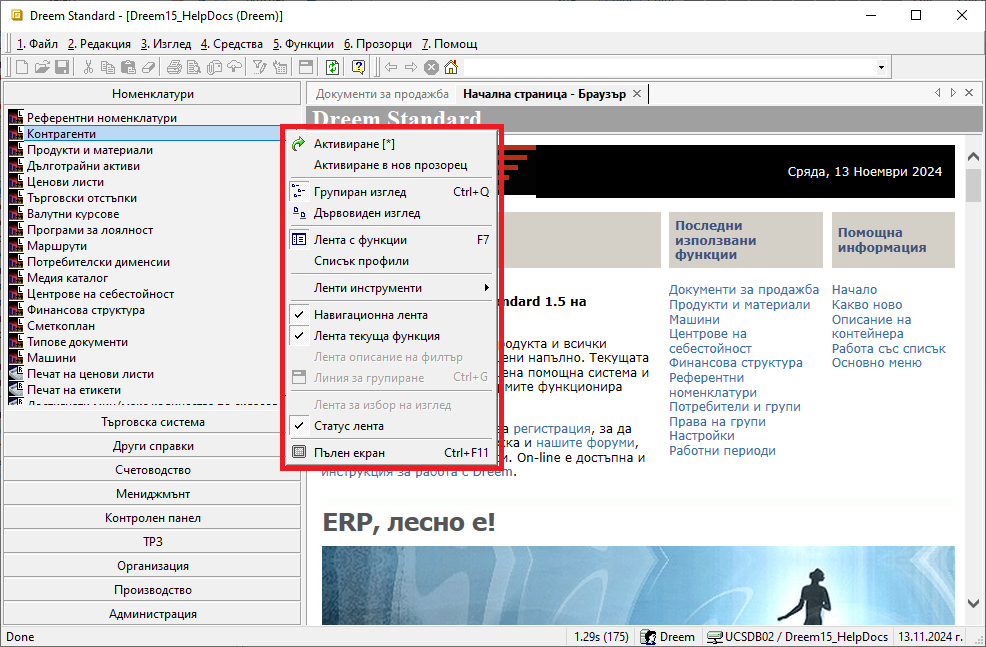
Tip
Използвайте Активиране в нов прозорец, за да стартирате едновременно няколко функционалности в отделни прозорци. Удобна възможност е, когато трябва да работите в няколко справки или документи в системата.
Активираните функционалности са достъпни през навигационната лента. Това позволява бързо превключване между тях.
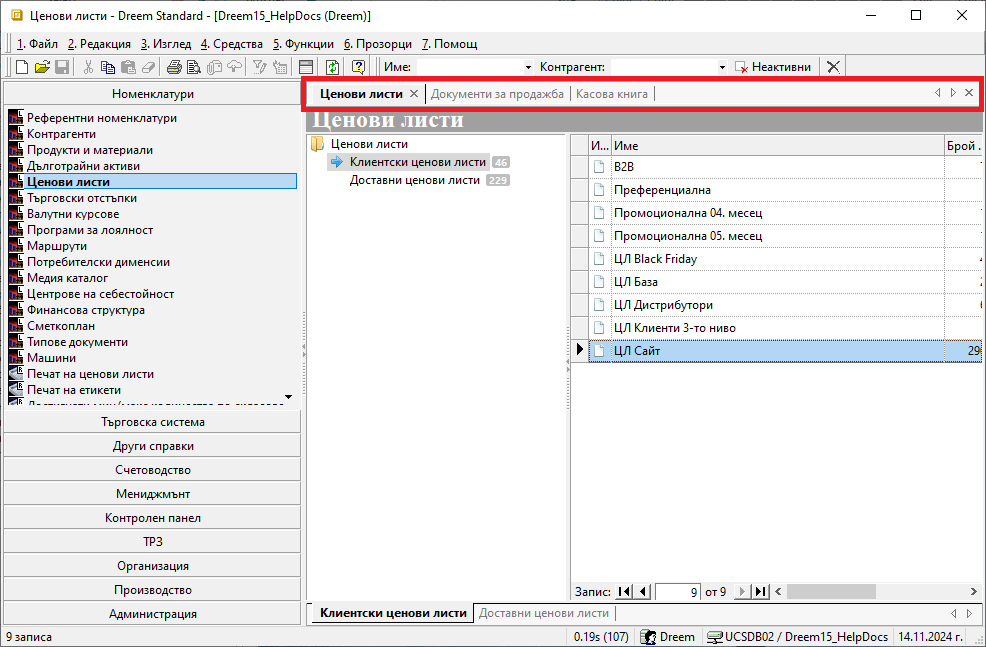
Прозорците могат да бъдат пренареждани чрез пренасяне с влачене - drag&drop функцията.
Основно меню#
Лента Основно меню се използва за прилагане на различни функции на форми, списъци и документи. Намира се най-горе на контейнера и съдържа следните менюта: Файл, Редакция, Изглед, Средства, Функции, Прозорци и Помощ.
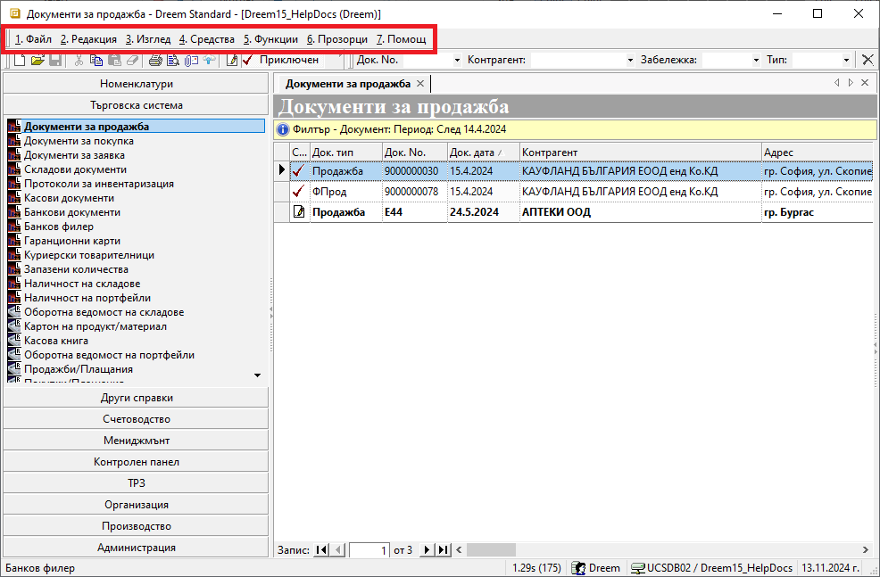
Лента с инструменти#
Лентата с инструменти се намира непосредствено под Основно меню.
Съдържа бутони, даващи бърз достъп до някои инструменти за въвеждане на функции на форми, списъци и документи, изнесени от Основно меню .
В Лента с инструменти са активни различни бутони - тези, чиито функции системата може да приложи в текущия списък.
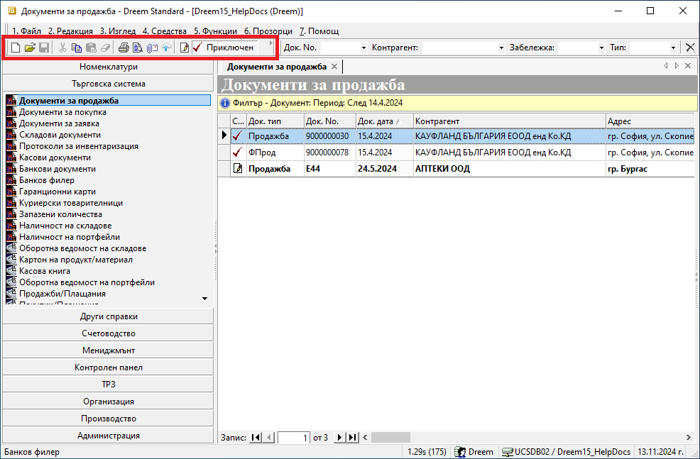
От тук, например, може да създадете нов запис (документ, номенклатура) и да редактирате запис. Достъпни са бутони с основни действия като запис, изрязване, копиране, поставяне и изтриване.
За да посочите на системата за кой запис ще се отнасят действията, трябва преди това да се позиционирате на реда с номенклатура или да маркирате желания ред с документ. И, както казахме, активират се само бутони, за които системата може да приложи техните функции.
Контекстно меню#
В Контекстно меню се съчетават функции от Основно меню и от Лента с инструменти. Отваря се с десен бутон на мишката върху списъците с документи или номенклатури.
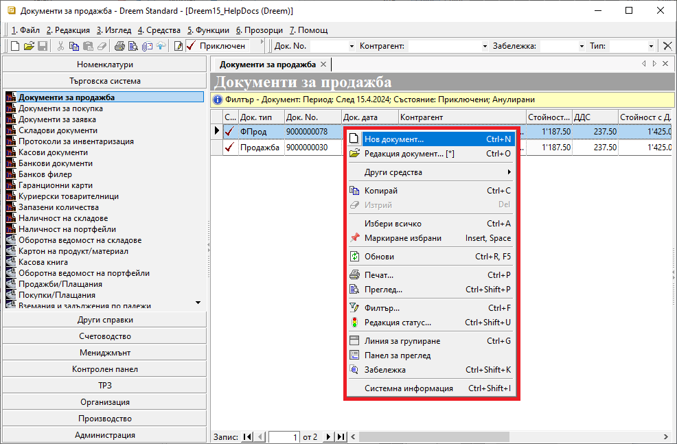
Това меню съдържа както общи, така и променливи опции, адаптирайки се към различните списъците с функционалности.
Например, ако сравним контекстното меню за номенклатура Продукти и материали и Документи за продажба, се вижда, че при продуктите менюто дава бърз достъп до настройване на Дименсии, както и активиране на изглед Миниатюри. Тези опции не са възможни при продажбите. При продажбите, обаче, чрез контекстното меню е възможна промяна в статуса на документите.
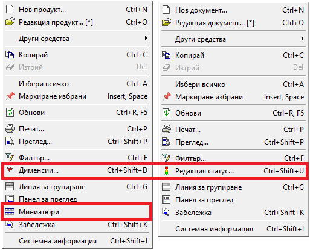
В подменю Други средства се съдържат различни за отделните функционалности опции за генерация на свързани документи, прилагане на корекции, свързване с банкови плащания, бързи справки и други.
Меню на списък#
За всеки списък е достъпно меню с функционалности на колоните като сортиране, групиране, скриване, извеждане на колони и други.
Меню на списък се отваря чрез десен бутон на мишката върху реда със заглавия на колони.
В статията Работа с колони на списъци подробно са описани всички възможности, които това меню дава при работа с колони.
Напред в темата ще разгледаме как работят най-често прилаганите функции от това меню при работа с нередактируеми списъци.
Използване на основни и бързи филтри#
Съдържанието на всички списъци може да се променя чрез прилагане на филтри.
Правилното филтриране е първата и най-важна стъпка, за да се обзаведе списъкът с верните данни. Едва тогава е оправдано да се продължи с настройването на списъка.
Основен филтър#
Основен Филтър ще откриете в някои номенклатури, като Контрагенти, Продукти и материали и др., във всички списъци с документи и в справките.
Филтър за текущо отворен списък е достъпен чрез:
меню 4. Средства
жълтото поле в началото на списъка
десен бутон върху списъка
клавишна комбинация Ctrl + F
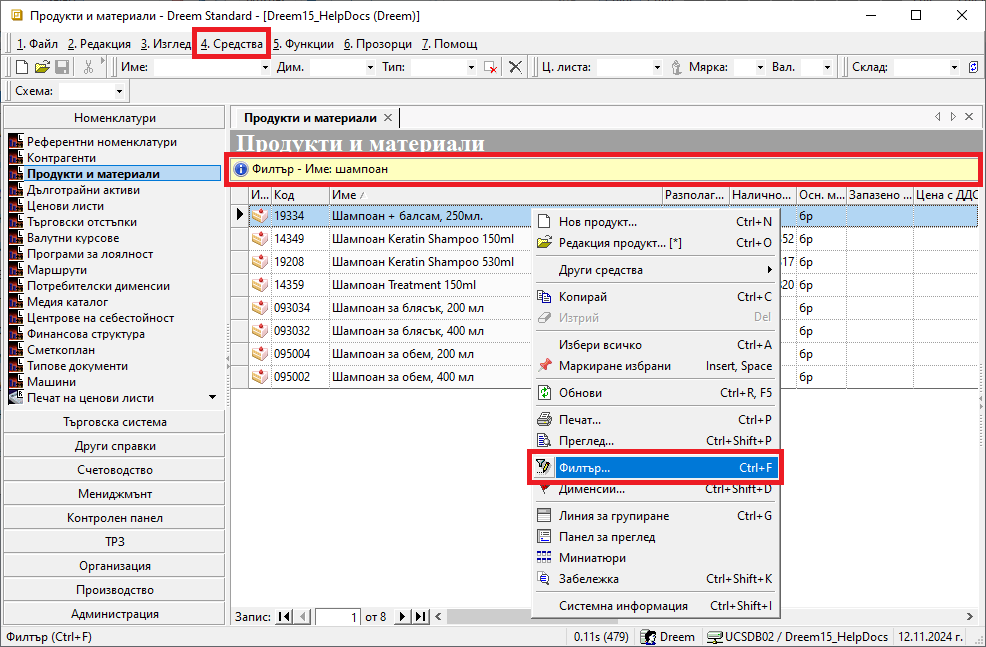
Спрямо заложените в основния филтър критерии, системата ще обзаведе списъка с данните, отговарящи на тях. Избраните критерии се визуализират в жълтото поле.
Системата запазва последно настроения филтър и го прилага автоматично при следващо отваряне на списъка.
Филтър формата за основно търсене съдържа променливи реквизити, различни за отделните списъци . Така например, ще забележите и различен брой панели във филтрите на Документи за продажба и на справка Продажби (реализация)
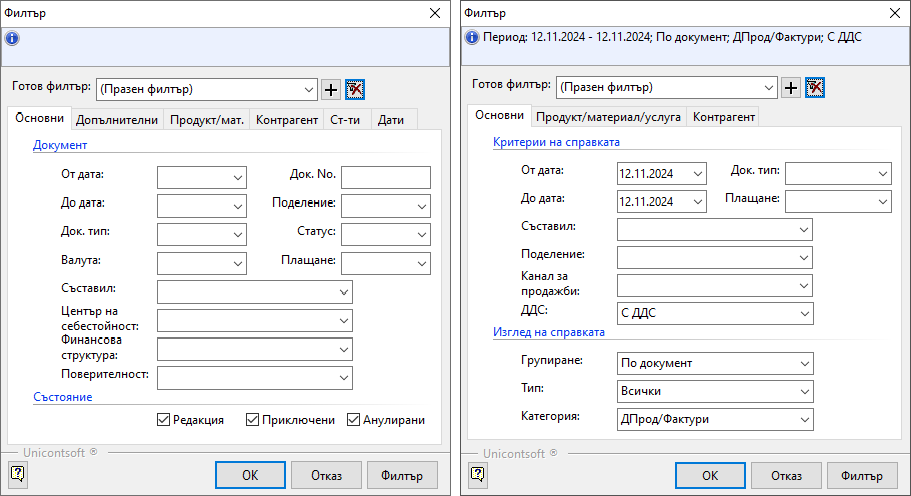
Във форма Филтър има опция Изчистване текущ филтър, която автоматично почиства всички полета.
Това е полезно при ново търсене, защото гарантира, че настройвате филтъра “на чисто”.
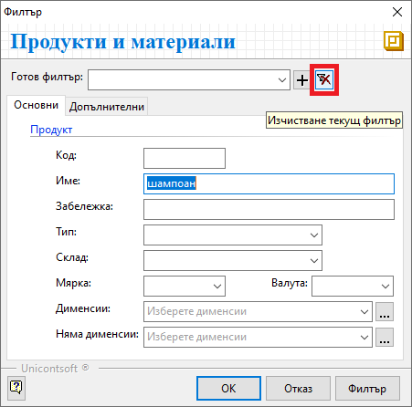
Бърз филтър#
Ще откриете Бърз филтър над почти всеки списък в системата. Съдържанието му в различните форми и списъци варира. Може да съдържа полета за свободно търсене по текст (част от текст) и полета с падащи прозорци. От статията Бърз филтър и настройки на начина на търсене може да разберете как да използвате бързия филтър още по-ефективно.
Чрез Бърз филтър редуцирате единствено съществуващите данни в списъка.
За голяма част от функционалностите в системата бързият филтър е достъпен от лентата с инструменти в контейнера.
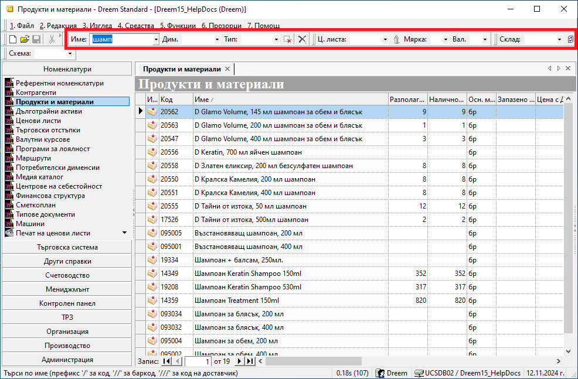
Освен това, ще може да използвате бързи филтри също в панел Списък данни на справки, форма за редакция на документи, номенклатури и др.
Работа с редактируеми списъци#
Списъците, позволяващи добавяне и редактиране на данни, съдържат т.нар. ред за добавяне на нов запис и/или множество оцветени в жълт цвят полета (цели редове).
На следващото изображение може да разгледате и двата от споменатите елементи.
Редът за добавяне на нов запис е статичен и винаги остава като първи ред в списъка. Данните в голяма част от полетата се обзавеждат чрез падащи списъци. Когато всички желани полета от реда са попълнени, се потвърждават с клавиш Enter. Това добавя въведените данните като отделен ред в списъка, а редът за добавяне на нов запис автоматично се “изчиства” за следващо попълване.
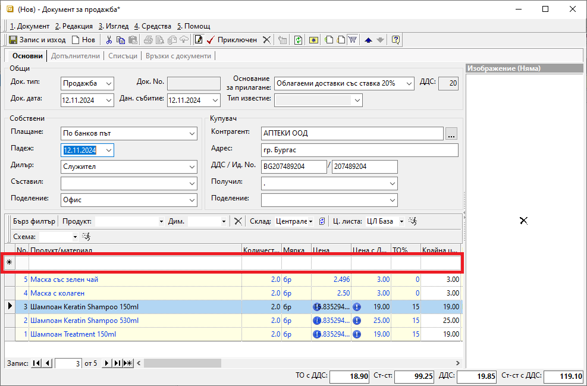
Другата характерна особеност на редактируемите списъци - полетата/ редовете в жълто, са знак, че се допускат корекции на данните в списъка. В един списък е възможна и комбинация от “заключени” и “отключени” за редакция полета.
В жълтите полета системата винаги позволява промяна на данните.
В тези списъци може да се прилагат филтри. При тях системата също поддържа сортиране, групиране и пренареждане на колоните.
Работа с нередактируеми списъци#
Характерното за нередактируемите списъци, както подсеща името им, е, че записите в тях са “заключени” за корекции.
Промяна на данните е възможна единствено, ако за записите е достъпна форма за редакция.
Разбира се, с пълна сила се прилагат функциите на Контекстно меню, Меню на списък, бързи и основни филтри.
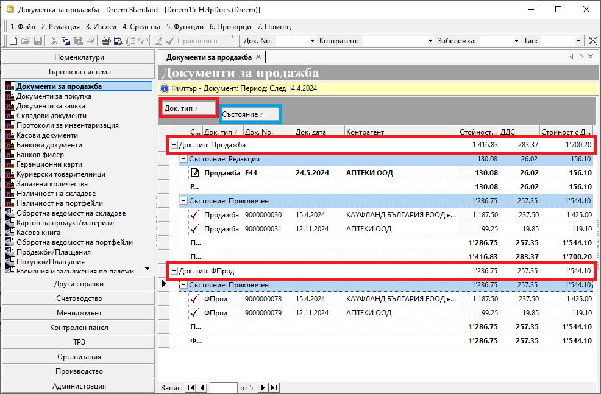
Управлявайте времето си за оперативни задачи ефективно, като прилагате добре подбрани филтри.
За да работят максимално бързо списъците с документи, избягвайте филтриране с ненужно дълги времеви интервали.
В поле Готов филтър на форма Филтър може да настройвате готови шаблони с различни комбинации от критерии.
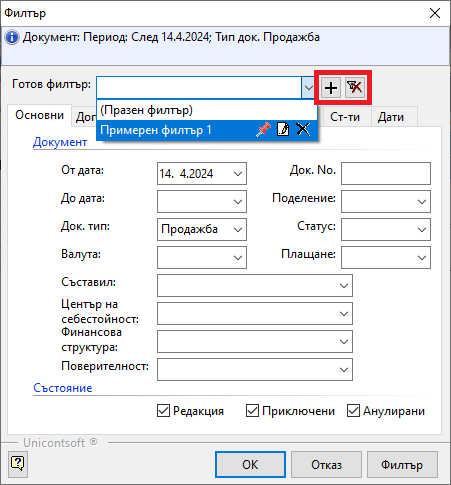
Шаблон с филтър се добавя или изтрива съответно от бутоните [+] и [x] след полето вдясно.
Списъкът със записани готови филтри се отваря в падащо меню с бутони за контрол - закачане, редакция, изтриване.
Използване на Списък с данни в справките#
По подразбиране справките в системата се визуализират в Графичен изглед с вид на преглед при печат. Филтрираните данни се подреждат в системно заложен шаблон. За някои справки шаблонът може се променя, което става автоматично при промяна на избрани реквизити във филтъра.
Този изглед не позволява ръчна промяна в конфигурацията на справката.
Съществува и алтернативен изглед - Списък с данни. При него данните са оформени в табличен вид и може да прилагате правилата за работа с нередактируеми списъци.
При този изглед конфигурацията на справката може да се променя.
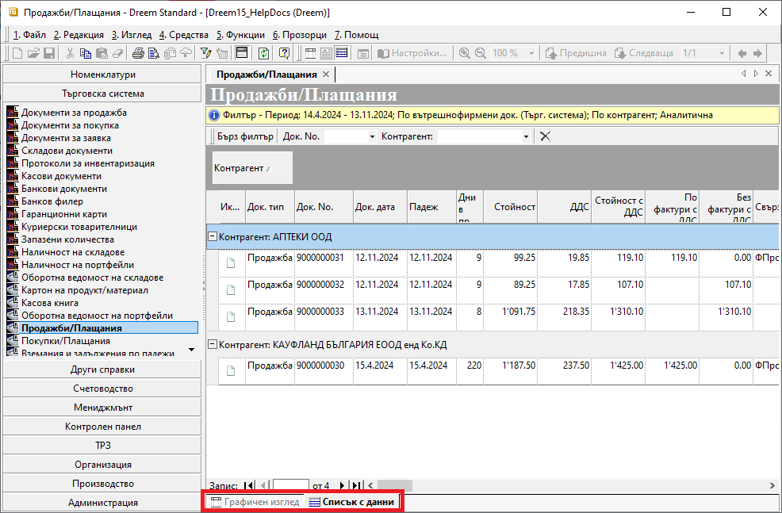
Размествайте, скривайте и показвайте от наличните допълнителни колони, за да създадете собствен удобен дизайн.
Активирането на Тотали за избрана групировка може да добави нова и полезна иформация.
В тази си форма справките, или части от тях, могат да бъдат копирани във външен файл, където списъкът подлежи на пълна редакция и преформатиране.
Пълните данни на текуща справка може да експортирате и в CSV или XLSB файлове. Функцията е достъпна от меню Средства || Експорт на данни.